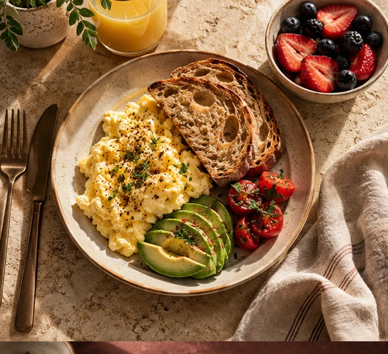
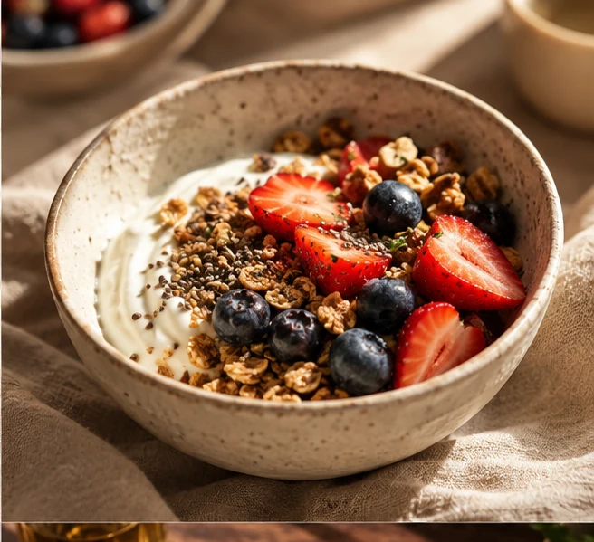
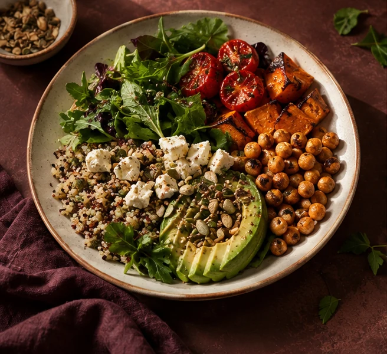
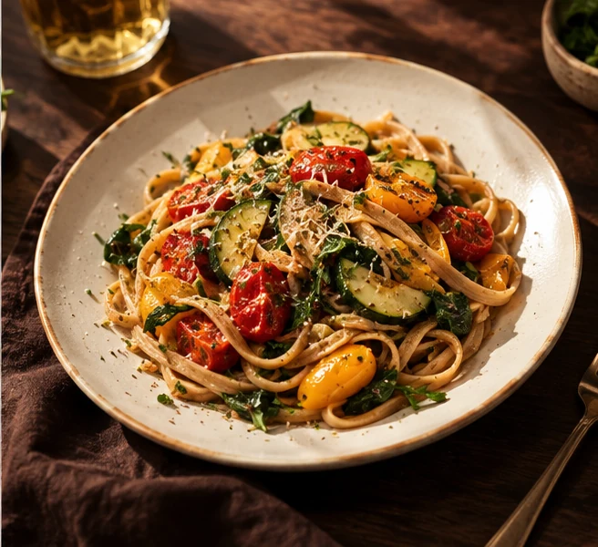

Comer bem
pode ser leve,
gostoso e fazer
parte da sua vida.
Descubra uma forma prática e personalizada de cuidar da sua alimentação com Larissa Lima e o Método Agapi.

ESPAÇO RESERVADO
PARA A FOTO DA LARISSA
Prazer,
eu sou a Larissa.
Acredito que cuidar da alimentação não precisa significar abrir mão do prazer de comer.
Meu propósito é ajudar você a encontrar um caminho mais leve, prático e possível para seus objetivos. Sem fórmulas prontas: com acolhimento, escuta e escolhas que façam sentido para a sua rotina.
Texto de apresentação provisório, sujeito à aprovação da profissional.
Conheça o
Método Agapi.
Uma maneira mais prática, gostosa e personalizada de cuidar da alimentação.
A vida acontece fora do plano.
Propostas de alimentação que consideram seu dia a dia, seus horários e suas possibilidades.
O prazer também faz parte.
Comer de um jeito equilibrado sem deixar o sabor e o afeto de lado.
Cada pessoa, um caminho.
Um olhar individualizado para você e o que faz sentido para os seus objetivos.
Hábitos feitos para durar.
Pequenas construções possíveis que cabem na sua rotina e evoluem com você.
Os pilares descritos são sugestões de comunicação e dependem de validação da Larissa.
Quero conhecer o acompanhamento
pode ser
especial.
Comer bem não
precisa ser sem graça.
Uma alimentação equilibrada também pode ter sabor, variedade e espaço para o que você gosta.


Comida gostosa. Rotina possível. Uma relação mais leve com a alimentação.
Um cuidado
feito para você.
Do primeiro contato ao acompanhamento, cada etapa é pensada para oferecer orientação com clareza e acolhimento.
e também online.
- 01
A gente se conhece
Você entra em contato e combina seu primeiro agendamento.
- 02
Um olhar para você
Na consulta, suas necessidades e objetivos são avaliados individualmente.
- 03
Seu planejamento
Orientações personalizadas pensadas para sua realidade e preferências.
- 04
O caminho continua
Acompanhamento de acordo com o serviço escolhido e suas necessidades.
Cuidar da alimentação é também
aprender a cuidar de si.
Um espaço de escuta, individualidade e respeito ao seu ritmo.
LARISSA LIMA · NUTRICIONISTASeu próximo passo
pode começar com
uma conversa.
Conheça o acompanhamento nutricional da Larissa e descubra como começar.
Conversar no InstagramAtendimentos em Barueri e online.